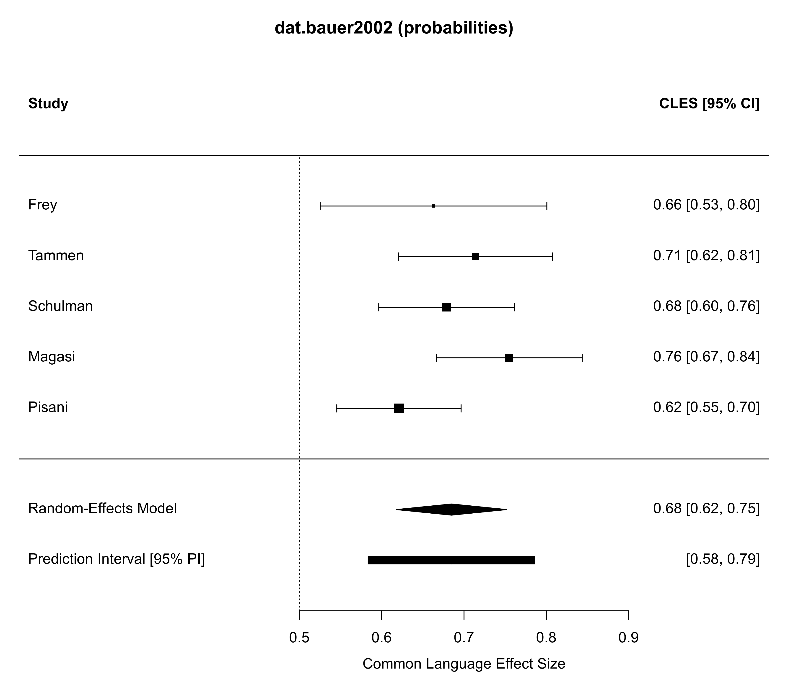
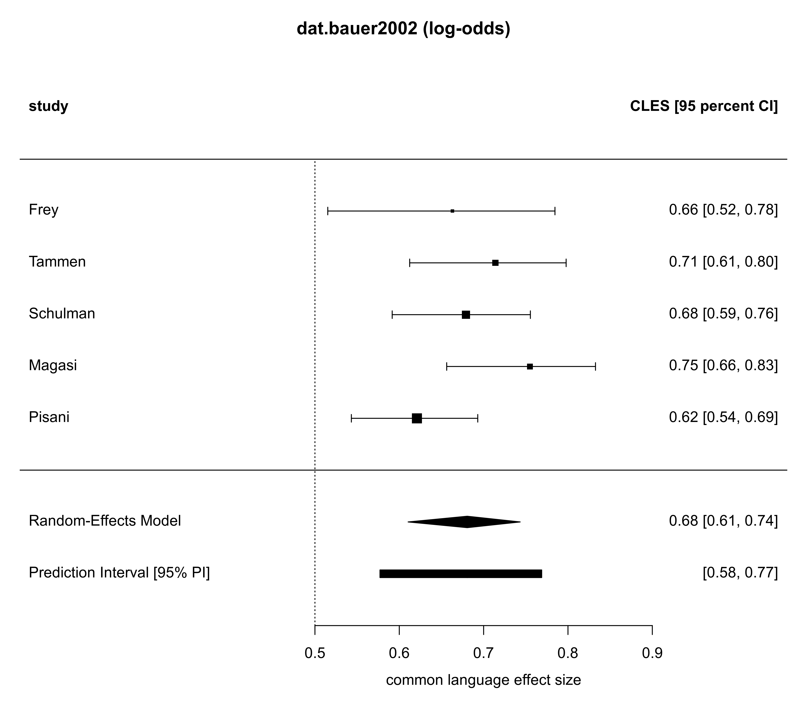
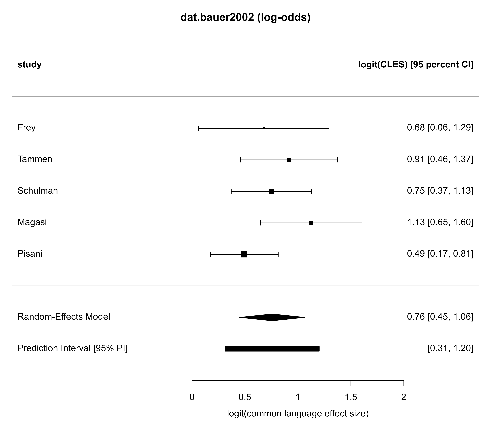
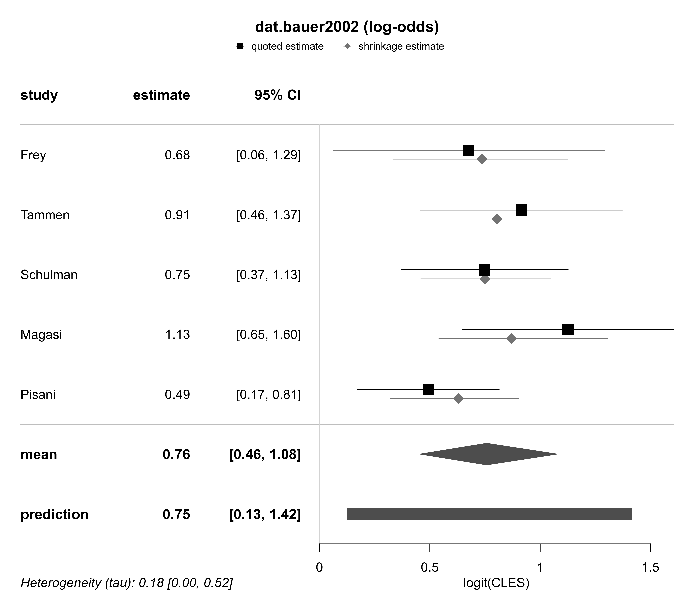

dat.bauer2002.RdEstimated Wilcoxon-Mann-Whitney (WMW) effect sizes from five studies on OM-89 (Uro-Vaxom) in patients with recurrent urinary tract infections.
dat.bauer2002The data frame contains the following columns:
| study | character | study identifier |
| year | numeric | publication year |
| threshold | numeric | threshold (for bacteriuria / UTI definition) |
| n.treat | numeric | number of patients in treatment group |
| n.control | numeric | number of patients in control group |
| n.total | numeric | total number of patients |
| wmwstat | numeric | Wilcoxon-Mann-Whitney statistic |
| lower | numeric | lower CI bound for the WMW-statistic |
| upper | numeric | upper CI bound for the WMW-statistic |
| stderr | numeric | standard error for the WMW-statistic |
Bauer et al. (2002) analyzed data from five randomized, placebo-controlled studies investigating the use of OM-89 (Uro-Vaxom) in recurrent urinary tract infections (UTI). Treatment effects were quantified in terms of the Wilcoxon-Mann-Whitney statistic computed based on the numbers of recurrences experienced by included patients from each study.
The WMW-statistic gives an estimate of the probability that a randomly selected patient from the treatment group is superior to a randomly selected control patient, also denoted as the common language effect size (CLES). “Superiority” in this case relates to fewer UTI recurrences experienced. A WMW-statistic \(>0.5\) then suggests a beneficial treatment effect.
Bauer, H. W., Rahlfs, V. W., Lauener, P. A., & Bleßmann, G. S. S. (2002). Prevention of recurrent urinary tract infections with immuno-active E. coli fractions: A meta-analysis of five placebo-controlled double-blind studies. International Journal of Antimicrobial Agents, 19(6), 451–456. https://doi.org/10.1016/s0924-8579(02)00106-1
medicine, common-language effect sizes, proportions
dat.bauer2002
#> study year threshold n.treat n.control n.total wmwstat lower upper stderr
#> 1 Frey 1986 1e4 27 31 58 0.663 0.5255 0.8005 0.0702
#> 2 Tammen 1990 1e4 61 59 120 0.714 0.6205 0.8075 0.0477
#> 5 Schulman 1993 1e4 82 78 160 0.679 0.5965 0.7615 0.0421
#> 3 Magasi 1994 1e5 58 54 112 0.755 0.6665 0.8435 0.0452
#> 4 Pisani NA 1e5 74 77 151 0.621 0.5455 0.6965 0.0385
library(metafor)
library(bayesmeta)
#> Loading required package: forestplot
#> Loading required package: grid
#> Loading required package: checkmate
#> Loading required package: abind
#> Loading required package: mvtnorm
#>
#> Attaching package: ‘bayesmeta’
#> The following object is masked from ‘package:stats’:
#>
#> convolve
# analyze based on plain probabilities as effect sizes
wmw.prob <- escalc(measure="CLES",
yi = wmwstat, sei = stderr,
ni = n.total, slab = study,
data = dat.bauer2002)
# perform a random-effects meta-analysis
ma01 <- rma.uni(wmw.prob, method="PM", test="adhoc")
# show forest plot
forest(ma01, addpred=TRUE, predstyle="bar",
refline=0.5, main="dat.bauer2002 (probabilities)")

# analyze based on log-odds (logits) as effect sizes
wmw.logit <- escalc(measure="PLO",
yi = log(wmwstat / (1-wmwstat)),
sei = stderr / (wmwstat*(1-wmwstat)),
ni = n.total, slab = study,
data = dat.bauer2002)
# perform a random-effects meta-analysis
ma02 <- rma.uni(wmw.logit, method="PM", test="adhoc")
# show forest plot (back-transformed to probabilities)
forest(ma02, addpred=TRUE, predstyle="bar",
transf=transf.ilogit,
header=c("study", "CLES [95 percent CI]"),
xlab="common language effect size",
refline=0.5, main="dat.bauer2002 (log-odds)")

# show forest plot (in terms of log-odds)
forest(ma02, addpred=TRUE, predstyle="bar",
header=c("study", "logit(CLES) [95 percent CI]"),
xlab="logit(common language effect size)",
refline=0.0, main="dat.bauer2002 (log-odds)")

# perform Bayesian meta-analsis
# (using a half-normal prior for the (logit-WMW) effect heterogeneity
# and a Normal(0.0, 1.814) prior for the overall mean logit;
# the overall mean prior (with variance (pi/sqrt(3))^2)
# roughly corresponds to a uniform prior in probability)
ma03 <- bayesmeta(wmw.logit,
tau.prior = function(t){dhalfnormal(t,scale=0.5)},
mu.prior = c(0.0, 1.814))
forestplot(ma03, title = "dat.bauer2002 (log-odds)",
xlab = "logit(CLES)",
txt_gp = fpTxtGp(ticks = gpar(cex=1), xlab = gpar(cex=1)))
